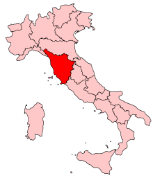
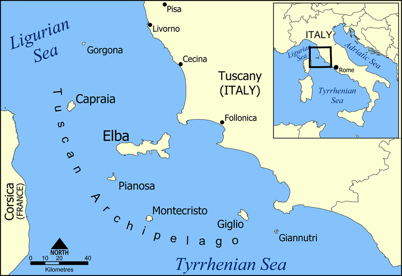

<!DOCTYPE html>
<html lang="hu">
<head>
    <meta charset="UTF-8">
    <meta http-equiv="X-UA-Compatible" content="IE=edge">
    <meta name="viewport" content="width=device-width, initial-scale=1.0">
    <title>Toszkána Földrajza</title>
</head>
<body>
</body>
</html>
<html>

<head>
    <meta http-equiv="X-UA-Compatible" content="IE=edge">
    <meta name="viewport" content="width=device-width, initial-scale=1.0">
</head>

<body>
    <h1>Földrajza</h1>

    <div class="row">
        <div class="col-12 col-md-6 p-2">
            <div class="p-3 h-100 info">
                <p>Toscana Közép-Olaszország talán legszebb régiója – már amennyire érdemes ilyen típusú sorrendet felállítani. Partjait a Tirrén- és a Ligúr-tenger alkotja, a szárazföldi határait más olasz régiók képezik. 
                Kulturális és művészeti szempontból az egyik leggazdagabb része Itáliának, történelme az egész ország szempontjából kiemelkedő jelentőségű.</p>                    
                <div class="card" style="width: 80%;margin:auto">
                    
                    <div class="card-body">
                      <p class="card-text text-center font-weight-bold">Földrajz</p>
                    </div>
                  </div>
            </div>
        </div>
        <div class="col-12 col-md-6 p-2">
            <div class="p-3 h-100 info">
                <p>Területén mintegy 25%-ban találunk hegyeket, ez leginkább az Appenninek láncait jelenti, mely észak és keleti irányból képez természetes védelmi vonalat a régió köré. 
                    Síkságokban szűkölködik a régió, felszíne leginkább dombosnak mondható; ezt a milliónyi, tipikusan a régiót jellemző kép, promo-fotó készítésekor kihagyhatatlan elemként szorgalmasan mindig meg is jelenítik.</p>
                <div class="card" style="width: 80%; margin:auto">
                    
                    <div class="card-body">
                      <p class="card-text text-center font-weight-bold">Tuszkana</p>
                    </div>
                  </div>
            </div>
        </div>
    </div>
    <p>Toscana klímája a hegyek és a tenger közelsége miatt területenként más-más 
        jellemzőket mutat, így egyetlen szóval nem is könnyű leírni. A nyarak kimondottan melegek, főleg a síkabb területeken, a völgyekben, ahol nem ritkán 40°C fok is lehet; a 
        hegyvidéki területeken pedig a telek hordoznak erősebb vonásokat, a téli időszakban gyakran havazik.</p>

    <p>A régió történelmébe és a hozzá kapcsolódó részletekbe nem szeretnék itt belekezdeni, hiszen egy általánosabb részre nem lenne illendő elaprózni a rengeteg, cseppet sem jelentéktelen momentumot, de a tisztesség kedvéért nem mehetek tovább anélkül, hogy Leonardo da Vinci és a Medici-ek nevét ide ne írnám. Bővel lesz még azonban alkalom a mazsolázgatásra.</p>
    <p>A számos, kisebb-nagyobb természetvédelmi terület mellett 3 nagy nemzeti parkot emelhetünk ki Toscana területén (Parco Nazionale Arcipelago Toscano, Parco Nazionale delle Foreste Casentinesi, Monte Falterona e Campigna, és Parco Nazionale dell?Appennino Tosco-Emiliano) amelyekből kettőn a szomszédos régióval (Emilia-Romagna) osztozik, s csak egy a sajátja. Ez utóbbihoz tartozik a toszkán szigetvilág szinte teljes területe is, hiszen a régió több szigettel is büszkélkedhet, nem kisebbekkel, mint Elba, Giglio, Montecristo és még sorolhatnánk.</p>


</body>